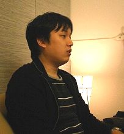

Rubyist Hotlinks 【第 24 回】 okkez さん
はじめに
著名な Rubyist にインタビューを行う企画「Rubyist Hotlinks」。今回から関西編をお送りします。関西編 (1) は、るりまでご活躍の okkez さんです。また、インタビューアを yhara さんに担当して頂きました。いつもとは一風変わった Rubyist Hotlinks をお送りします。お楽しみください。
プロフィール
 Ruby リファレンスマニュアル刷新計画 ( 通称るりま ) で精力的に活動されている okkez さん。また、Ruby/Rails 勉強会 @ 関西や、関西 Ruby 会議などで開催している「初級者向けレッスン」ではメイン講師を担当している。学生時代にはさまざまなスポーツをされており、空手では黒帯の持ち主。
Ruby リファレンスマニュアル刷新計画 ( 通称るりま ) で精力的に活動されている okkez さん。また、Ruby/Rails 勉強会 @ 関西や、関西 Ruby 会議などで開催している「初級者向けレッスン」ではメイン講師を担当している。学生時代にはさまざまなスポーツをされており、空手では黒帯の持ち主。
- 好きな言葉
- Take it easy
- 尊敬する人
- たくさんいる。
- ご本人のサイト
- okkez weblog、Twitter
インタビュー
- 聞き手
- yhara
- 語り手
- okkez さん
- 野次馬
- cuzic さん、Yuya さん、kazuki さん、morphine57 さん
- 日にち
- 2010 年 3 月 20 日
- 場所
- 株式会社 那由多屋 1
目次
プロフィール
yhara 今日はお忙しいところありがとうございます。よろしくお願いします。
okkez よろしくお願いします。
yhara 最初の質問、行きます。えっと、インタビューアが不慣れなんで……2。はい、よろしくお願いします。
生年月日、出身地、現住所、家族構成
yhara えっと、生年月日、出身地、現住所、家族構成。
okkez えっ、マジで？そんな細かく？
yhara あの、言える範囲で。
okkez 言える範囲で……。生年月日は 1979 年 9 月 23 日です。
yhara 出身地は？
okkez 出身地は大阪です。
yhara はい。現住所も大阪ですね？
okkez 現住所は……、大阪にしといてください。
yhara 大阪府？
okkez ……。大阪で。
yhara 家族構成。
okkez 家族構成は秘密で。
yhara (笑)。じゃ、無かったことにして。
好きな言葉、座右の銘
yhara 好きな言葉。
Yuya 座右の銘ですか？
yhara もしくは座右の銘。
okkez なんやったっけ……。「Take it easy」だ。
yhara おお。由来とかあるんですか？
okkez 由来は……、なんやったっけ？えっと、昔好きだった歌に入ってたので。
yhara 気軽に行こうみたいな？
okkez うん。
尊敬する人
yhara 尊敬する人。
okkez 尊敬する人は、いっぱいいてさ、挙げきれへん。だってさ、cuzic さんも尊敬してるし、Yuya さんも尊敬してるし、yhara さんも尊敬してるし、kazuki さんも尊敬してるし。
yhara たくさんいるって言うのは、プログラマが多いってことですかね？
okkez なんか、Ruby のコミュニティに入ってから知り合った人がすごい人ばかりで、尊敬できる人が多い。
yhara なるほど。
okkez 関西以外の人でも尊敬している人が多いです。
代表作
yhara 代表作。
okkez 代表作、別にないんですよね。
yhara 別に「作」じゃないけど、るりまですかね？
okkez るりまと Ruby 関西でやってる初級者向けレッスン3くらい？
yhara はいはい。もう、何回くらい？
okkez もう、多分 30 回くらいやってるけど、あんまり初級者向けじゃないから。
yhara かずひこさんから引き継いでから 30 回ですか？
okkez くらい……かも。
cuzic えっ？そんなことないんやないの？かずひこさんが 10 回くらいやって……
okkez かずひこさんが 10 回くらいやって。で、俺が 20 回やってるから、20 回くらい。で、何回かは他の人にやってもらってるから 20 回くらいやね。4
yhara ま、3 年くらい経ちますからね。
okkez うん。
好きなメソッド、嫌いなメソッド
yhara じゃあ、好きなメソッド、嫌いなメソッド。
okkez 好きなメソッドは、やっぱ map かな。
yhara おお。人気の。
okkez 人気の map。
yhara collect ではなくて？
okkez collect ではなくて map。短いから。
cuzic なんかテンプレになってんな、これ。
yhara 嫌いなメソッドは？
okkez 嫌いなメソッド……、なんやろ？
cuzic set_trace_func。5
全員 (笑)
Yuya set_trace_func は、なかなか挙げる人はいないでしょう。
cuzic むしろ好きなメソッド。
Yuya むしろ便利なメソッド (笑)
okkez なんやろ。引数の多いメソッドはちょっと……。
yhara あー。
cuzic 標準であんま無いもんな、引数の多いメソッド。
okkez うん。
yhara 何ですかね？
okkez 標準でついてるやつやったら、each_with_index はあんまり好きじゃない。
cuzic あー、分かる！分かる！ each_with_object と each_with_index の 2 つを並べると違和感を感じる。
okkez each_with_object と、inject を両方並べると混乱する (笑)。引数の順番が違う。
kazuki each_with_object って何ですか？
okkez each_with_object って言うのは、Ruby 1.9 で Enumerable に新たに追加されたやつで、Rails さんの便利メソッドです。
yhara さっきのやつ、 ary.each.with_index とかできますけど？
okkez そうそう。だから最近それで書いてる、ずっと。
Ruby に関して
Rubyist になったきっかけ
yhara じゃあ、次、Ruby に関してですが、Rubyist になったきっかけ。
okkez きっかけはですね、えっと、たしか 2004 年の末くらいに、ちょうど Rails 勉強会の第 0 回があって、最初やからこれ行こうって思ったのがきっかけですね。ここから Ruby 勉強会と、Rails 勉強会の両方行くようになった。
yhara 意外にも Rails が先なんですね？
okkez いや、Rails が先って訳じゃなくって、Ruby をちょこっとやってたんだけど Rails ってのが出てきて、勉強会行こうみたいな。
cuzic だから勉強会としては Rails が先？
okkez そう、Rails が先。だから、Ruby はその前からちょこちょこ書いてた感じです。
現在の Ruby との付き合い
: 
yhara じゃあ、現在の Ruby との付き合い。
okkez えっと、仕事も Ruby だし、趣味も Ruby ですね。
yhara あ、前後しますけど、最初に Ruby 触ったのはどんなきっかけだったんですか？
okkez 最初に Ruby 触ったのは、2004 年の末よりさらに前で、1.6.8 くらいの時ですね。プログラミングを勉強したくって探してたら、なんか日本人が作った Ruby ってのがあるっていうのが分かって。それで触ったんだけど 1.6.8 時代は、ドキュメントがプログラマー向けのやつしかなくって、僕にはまだちょっと無理だったんで、挫折しました (笑)
yhara (笑)。なんと。で、それから勉強会に行くと。
okkez その後は、PHP をしばらくやってて。まあ、でもなんかひどい感じだったんで、PHP はいろいろ。
yhara (笑)
okkez で、なんか 1.8.2 くらいのときに戻ってきたら、分かるようになってた。
yhara あー。
okkez 多分、1 回 Java をやってから戻ってきたからやと思うんやけど、なんか分かるようになってた。
yhara そうですよね。Java 知ってればそんなに躓くところはないかな。
okkez 結構、いろいろ書いてたし。
Ruby の好きなところ、嫌いなところ
yhara Ruby の好きなところ、嫌いなところ。
okkez Ruby の好きなところは、書くのが楽チン。なんか馴染んだ感じ。嫌いなところは……、なんだろうな。Ruby 自体やないんやけど、外国の人が書いたライブラリを使おうと思ったら、テストとかなんも無くって、使えないことが多い。
Yuya で、つい再発明をしてしまうという……
okkez つい再発明をしそうになる。
Yuya つい最近やってしまった (笑)
okkez なんか、ケント・ベック 6 とか海外の人がテスト駆動開発とかガーガー言ってんのに、別の海外の人は全然テスト書かないってどういうことやねん、みたいな。全然関係ない人やのにダブルスタンダードに見えてしまうという (笑)
yhara 海外で一括りになってなってますね。
okkez そうそうそう (笑)。海外クラスタで一まとめ。
yhara まあ、海外も広いですからね。テストを書きなさいと。
okkez そうそう、テストをちゃんと書いてほしい。
Ruby を使った成功事例
yhara じゃあ、Ruby を使った成功事例。こんなことが出来ました、みたいな。
okkez 前の会社の時に、結構でっかいプロジェクトがあって、そこで結構同じようなコードをたくさん書かないといけなかったんやけど、そのコードを書くために必要な情報は結構定型的な情報で、なんかもう表にしてまとめてあるような感じなんです。で、その書かれている表を Ruby でパースして、ERB でテンプレート作って、ソースコードジェネレータを作ったら、すごい楽になった。
yhara それは何のコードを生成してたんですか？
okkez それはね、Oracle って言うデータベースがあるんですけど、それのプロシージャ言語の PL/SQL ですね。
yhara おおー。
Ruby のキラーアプリケーション
yhara じゃあ、Ruby のキラーアプリケーションは？これがあれば便利です、みたいな。
okkez 僕はあんま使ってないけど、Hiki と tDiary はやっぱすごいなと思う。最近で言ったら、やっぱ RubyGems かな。
yhara 僕のとき、RubyGems 挙げたら、「えっ？」って言われたんですけど (笑)
okkez (笑)
Yuya アプリケーションなんですか？あれ。
okkez アプリケーションだと思うけどな。でも RubyGems の実装読むと結構ダメで。
yhara 結構、いろんなとこがアレですよね。でも動いてますからね。
okkez まあ、動いてるからいいけど、あれはちょっと……。実装まずいとこがいっぱいある。
Ruby の習得
yhara Ruby の習得は簡単でしたか？
okkez 1 回挫折してるんで (笑)
yhara そうですよね (笑)。いったん挫折してますもんね。
okkez でもそれは大学に入って、1 年か 2 年ぐらいして始めてパソコン買ったぐらいの時なんで、まだ全然ブラインドタッチも出来ない時だったんでしょうがないかなと。
yhara Ruby は何で学びましたか？
okkez まず RWiki 時代のリファレンスを通読した。
yhara 赤いやつですね。
okkez 赤いやつ。あと、「たのしい Ruby」と「Rubyレシピブック」があったんでそれを全部読んで勉強しました。
yhara すごい。


okkez で、あとはやりたいことがちょいちょいあったんで、それを書きながら勉強ですね。
yhara 最初はなんのプログラムとか書いてました？
okkez 何やろ？最初の頃はソースコード管理とかなーんも知らんかったから。
yhara そうですよね。
okkez もう、やりたいことをやりたいように書いてた。
yhara テキスト処理とかですかね？
okkez テキスト処理というか、スクレイピングとかやってたかも。
yhara 正規表現で？
okkez なんか URL の一覧が載ってるよなページを落としてきて、”wget http://…/” みたいなんをガーっと並べるだけのスクリプトとか。
プログラミング全般
yhara じゃあ、こっからプログラミング全般の話に入りますけど、みなさん、なんかもうちょっとインタビューに入ってもらっていいですよ。
全員 (笑)
Yuya どうやって入ったらいいか分からへんねん。
okkez めっちゃ、入ってるよ、他の Hotlinks は。
cuzic じゃあ、ちょっとだけ入ろか。ちょいちょい入る方向で。
Yuya じゃあ、これからちょっとずつ、脱線しないように。
yhara 中村くんの時とかは、本人より周りの人が喋ってる量の方が多かったんで。
全員 (笑)
yhara もう、まつもとさんと竹内先生が GC の対談をするって言う感じになってたんで (笑)
全員 (笑)
okkez そっちの会話だけ取り出して、別の企画で成り立つやん。
初めてのプログラミング
yhara 初めてのプログラミング。
okkez 初めてのプログラミングは、大学に入ってからですね、授業で Fortran が出てきて。
Yuya 案外、遅めなんですね、イメージよりかは。
okkez パソコン持ってなかったんですよ。
Yuya 勝手にもっと早くからやってるイメージが。
okkez 最初に我が家にやってきたパソコンは PC-9821 で、それは中学生の時で。中学生のときはスポーツやってたんで。
Yuya あー、「パソコンなんてやってる暇なかったぜ」みたいな？
okkez 俺はいじってなくて、弟がずっとそれでゲームをやってた。
morphine57 ガリガリだったんですよね、昔は。
Yuya 「えーっ！」て言っていいのか分かんない。
cuzic ここはちゃんと掲載する方向で。
Yuya ちょっと最近キャッシュが溜まりつつあるという。7
Ruby 以外のプログラミング言語
yhara Ruby 以外のプログラミング言語は使いますか？
okkez 今ですか？今は JavaScript と Ruby。
yhara はいはい。
okkez で、あと必要に応じていろいろ。
yhara 経験した言語でもいいですけど。
okkez 経験した言語は、なんか勉強した言語はいっぱいあるんやけど、マスターした言語は Ruby と JavaScript ぐらいで、あとは Java くらい。
Yuya 結構、言語マニアですよね。
okkez 一通りは触ってる。
Yuya 触る分にはみんなでわいわいやってますよね、関西メンバー。
okkez Haskell もやったし、Scheme もやったし。
yhara Erlang とかね。ちょっとやりましたね。
Yuya ちょっとだけ。衝撃が強すぎて続かなかった Erlang。
okkez Erlang は衝撃が強すぎた。
Yuya でも Scala は何回かやりましたよね？
yhara あー、やってるんだ。
okkez 2、3 回やった。
Yuya JavaScript は未だに続いてるし。8
cuzic あー、そうだね。
美しいソースコード
yhara じゃ、美しいソースコード。今までに見た。
okkez 今までに見た美しいソースコード……、うーん。
cuzic 自分が書いたコード？
okkez 自分が書いたコードは、そうでもなくて。あー、でもあんまり人のコードは見ないんだよな。
cuzic えー？
Yuya 意外ですね。
cuzic 意外やな。
yhara 本当ですか？
okkez あ、でも見て、汚ないなと思って、書き直すことはあるけど。綺麗だなと思ったのは、Yuya さんの batty 9 かな。よくコードを見て参考にしてる。
Yuya ありがとうございます。
okkez それくらいかな。
yhara batty とは？
Yuya バッテリーを管理するための、Web サービスなんですけども。okkez さんと 2 人で個人的にテストの勉強をしようかっていう話があってからですよね？あれ、確か。
yhara テスト・ファースト？10
Yuya テストファーストっていうか、テストの観点について、あ、こういう観点が抜けてるよねとか、こういう観点でテストをしたらすごい嬉しいよね、見たいな話をしてて。で、そん時にネタとして僕が持ち出したのが batty で、ちょこっと一時ね、2 人でいじってて。
okkez 俺はほとんど書いてないけど、Yuya さんが書いてるのを見て勉強してた。
Yuya (笑)。で、まあプチペアプロやって。でも okkez さんはそこから MultiAuth11 でしたっけ？メールアドレスとパスワードによる認証と、OpenID 認証を普通に扱えるようなプラグイン。
yhara Rails の？
Yuya プラグインっていうかエンジンかな？を切り出して作られてて。僕はそっちには全然関与してないですけど、っていうか batty 自体触ってなくて。でも、ソースコードは github にあるのでいくらでも弄って頂いて。
yhara いいですねぇ。
Yuya 美しいといっていただいて光栄です。
今興味を持ってるテーマ
yhara じゃあ、今興味を持ってるテーマとか。
okkez これねぇ、yhara さんとかぶるんですけど、家計簿。
全員 (笑)
cuzic それってテーマなのか？
yhara なんと！ 2 号連続。
okkez 家計簿を 2008 年くらいからずっとつけてて。
yhara それは何でつけてたんですか？
okkez GnuCash っていうやつでつけてて。
yhara はいはい。
okkez つけてたんですけど、入力しにくいなぁと思って。で、携帯のメールで簡単に登録できるようなやつを作ろうと思って、作ったんですよ。構想半年くらい、実装 2、3 ヶ月みたいなんで作って。で、やっと今、自分専用としては動かせるようになった。
yhara Rails ？
okkez Rails ですね。で、さっきの MultiAuth 使って認証は楽しつつ。
yhara 自宅サーバで動かしてる感じですか？
okkez 自宅サーバで動かして。
yhara おおー。それは公開予定とかは？
okkez もうちょい使いやすくなったら。でも URL 自体は公開されてるから12。使おうと思ったら使えるんだけど、非常に使いにくいと思う。
yhara やっぱ、自分で作ると甘くなりますよね。
okkez 自分で作ると、自分が使う部分はきっちり作るんだけど、使わない部分はちゃんと作らなくって。
cuzic あー、わかるな、それは。俺もそうやわ。
okkez テストもそうで、model の部分はちゃんとしてるけど、controller は結構適当とか。気になる部分だけはちゃんとテストするけど、こんなん明白実装やろってところは飛ばしたりする。仕事で書いてるコードは、rake stats のコードとテストコードの比が 1:2.8 とかやけど、今の家計簿のやつは、1:1.8 とかで、低かったりする。
Yuya テストの stats ってそもそもどれくらいがいいんでしょうね？
okkez Yugui さんは 1:3 とか言ってたけど。
Yuya 3 てなんか、僕からするとちょびっと少ない気が。あ、そっか、そんくらいか？どれくらいがいいって話してましたっけ？
okkez 1:3 くらいがいいって、で、Yuya さんががっつり書くと 1:3.5 とか 3.8 とかいくよね、って。で、ちょっと無駄なところがあるかもしれないねって話に。
Yuya ま、テストのフレームワークの種類にもよるかもしれないですね。
okkez RSpec で細かく書くとすごい爆発する。
yhara へぇー。
okkez 細かく細かく書いていってなんも共通化せんかったら 1:5 くらいまであがると思う。
Yuya でもそれは数値的に見ると多すぎる感じが。
okkez すごい意味が無くって、そんで share_example_for とかで共通化すると、1:3.8 あったやつが、1:2.8 まで落ちて、テストコードも 1500 行くらい減った。あれは劇的に減って面白かった。
生い立ち
生い立ちについて
:
yhara さて、こっから後半戦です。後半最初の質問は生い立ちについて。
okkez 生い立ち？
yhara 子供のときのね。テクノロジとの関わりみたいなね。
okkez 小学校高学年くらいまでファミコンを買ってもらえなかったとか。当時ドラクエが超流行ってて、ファミコンが超欲しかったんやけど全然買ってもらえんくって。
cuzic あ、そうなん？
okkez 小学校 4 年くらいでやっと買って貰えた感じ。パソコンとかもぜんぜん無くって、ずっと本ばっか読んでたかな？低学年の時はずっと本ばっかり読んでた。高学年になるとちょっと友達と外で遊んだりとか。あとなんかガンダムとか流行ってたんで、ガンダムのプラモデルで遊んだりした。
yhara ガンダムの何ですか？
okkez なんやろ？なんか SD ガンダムとかが流行ってて、スーパーデフォルメのやつ？
yhara ああ、ちっちゃいやつ。
okkez あれが流行ってたから、それで遊んでた。ガン消しとか。
yhara 中学の頃は？
okkez 中学の頃は軟式テニス部に入ったんで、ずっとそれの練習してました。で、部活後はどっかからバレーボールをパクッてきてサッカーしてた。
yhara (笑)
okkez バレーボールでサッカーすると、ボールがちっちゃいからめっちゃ曲がるんですよ。
yhara へぇー。魔球が。
okkez だからコーナーキックで直接決めたりとか。
yhara すごい。
morphine57 キャプテン翼状態。
okkez だから面白かった。
yhara へぇー。高校のときもテニスを？
okkez 高校の時は硬式テニス部に入って、1 年のうち 360 日くらいはテニスをやってました。
yhara おおー、すごい。
Yuya そんなやってたんですか？
yhara スポーツ少年ですね。
okkez ついでに言っとくと、中 2 くらいまで空手をやってて、一応空手は黒帯。
yhara すごい！そんな過去が。
cuzic 知らんかった。
Yuya へぇー！
yhara で、大学に入ったと。
okkez 高校卒業して、一浪して大学入りました。
yhara 大学は何系？
okkez 大学は工学部の機械システム工学科に入りました。全然情報系じゃなくて。当時は情報系のブームで頭いい人はみんな情報系に入って。
yhara 年によって違いますからね、平均点が。
okkez うちの大学は情報系の学部が無くって工学部しかなかったから、工学部の機械システムに入った。本当はプログラミングとかそんなんやってみたかったんやけど。なかなか、そううまくはいかず。
yhara じゃ、機械系の卒論を書きましたか？
okkez 卒論では、プログラミングはやったけど、実験のシュミレーションとかで。先輩が書いたプログラムがベースのやつがあって、それをあほみたいな回数繰り返すっていうプログラムを書いた。画像データとかテストデータとかいっぱい出てくるんやけど、それが全部で 10 数 GB とかになるようなプログラムを 1 週間くらいずっと走らせて、それを見てどういう風に実験の装置を作ったら、ちゃんと結果がでるか見たいな計算をして、で実際に装置を作って。そん時までなんも出来てなかったのを、ちゃんと動くようにした。
yhara レガシーコード？

okkez いやレガシーコードじゃない。あれはめっちゃ優秀な先輩が作ったやつやから、あれはちゃんと動いてた。
yhara そのあと院に行かれたんですか？
okkez いや、院は行ってないです。
yhara 就職？
okkez 就職しました。大学にはちょっと長く居たんだけども、卒業しました (笑)
yhara IT 系？
okkez IT 系の某社に入りました。
yhara プログラマとして入ったんですか？
okkez そこは SE。でも最初はプログラマですね。で、そこは 3 年ちょうどで辞めて、現職に。前職を辞める前にシリコンバレーツアーですよ。
yhara はいはいはい。
okkez yhara さんも行った裏シリコンバレーツアー13ですよ。
yhara 裏 SV ツアー。あそこでえじけんさん14と会って。
cuzic えじけんさんの影響は大きかったかも知れへんな。
okkez そうそう、考え方というか気の持ち様っていうか影響されたな。
yhara どういう感じで？
okkez なんか、やりたいことがちゃんと決まってるんならそれで行ったらいいやんみたいな。
yhara やりたい方向ってどんなことやったんですか？
okkez その時からるりまを書こうって宣言して。幾星霜やってます、みたいな。
yhara メンテナになって。で、今の仕事につながって。
okkez 転職して Rails を書いてる。
普段の生活スタイル
yhara 普段の生活スタイル。
okkez 普段の生活スタイルは、結構だらだらしてます (笑)
yhara 朝起きて？
okkez 朝起きてだらだらして、仕事行く日は仕事行って、仕事して夜 7 時か 8 時くらいに帰ってくる。
yhara 電車通勤ですか？
okkez 電車ですね。30 分くらいで行けるんで。
yhara 休みの日は？
okkez 休みの日？日曜日は、みんなが大好きな仮面ライダー15を見てます。
cuzic 朝ってなんか 6 つくらい連続で何か見てるとか言ってたっけ？
okkez 11 時くらいまではずっとテレビの前にいる。ドラゴンボールやワンピースみたりとか。でもテレビ見るのはその時間くらいで、他は全然見てなくって。
yhara インドア派ですか？アウトドア派ですか？
okkez インドア派ですね。あとはもうほとんどパソコンの前にいて、なんかごにゃごにゃやってる。テスト走らせて喜んだりとか。
yhara 緑になったよ、みたいな。
okkez 緑になったよ。でもペンディングもあるよ、みたいな。今はその家計簿のアプリケーションと仕事のやつをやってるくらいで。るりまはそろそろ本気でやらなあかんなと。
yhara 夏に向けてね。16
okkez 夏に向けて。
morphine57 成果発表の日が。
okkez そうそう成果発表があるから。まだ申し込んでないけど17。
morphine57 日本人がまだ誰も申し込んでないって角谷さんがつぶやいてた。
okkez あ、まじで。
yhara へぇー。
okkez 外人早いってこと？早いってことは別にステータスじゃないのにな。
yhara ま、だって、早いこと予定入れんとあかんですからね。
okkez あー、まあまあまあ。
yhara 飛行機があるから。て言う効果はあるかも。
okkez たしかに。でも決まるの結構遅いよな。
趣味
yhara 趣味的なものはありますか？
okkez 趣味は読書です。
yhara 技術書ですか？
okkez ここ数年は技術書が多いです。社会人になってからは技術書の方が多いですね。
yhara 技術書でないものは？
okkez 技術書でないものは小説ですね。
yhara 最近面白かったものはありますか？
okkez 最近じゃないけど、「ハリーポッター」は面白かった。
yhara 全部読みましたか？
okkez 全部読んだ。全部ハードカバーで買った。
Yuya しかも原書。
okkez 原書っていうか、英語のペーパーバックも持ってるけど読んでない。後はダレン・シャン18っていう今度映画化されるやつの日本語版。
yhara ファンタジー系が多いんですか？
okkez そうですね。児童文学っていうか子供向けのやつはやっぱ面白いんで。そうそう、ミヒャエル・エンデ 19 最高。ミヒャエル・エンデ好き、面白い。
yhara 僕まだ読んでないんですけど。
okkez ミヒャエル・エンデは「モモ」20 も面白いし、「終わらない物語」も面白い。
Yuya 「モモ」しかしらない。
仕事とプライベートの両立
yhara えーっと、仕事とプライベートの両立。
okkez 結構これが難しくって。
yhara どっち側に倒れるんですか？
okkez 互いに侵食しようとしてる。
yhara はいはい。
okkez 分けようって努力はしてるけど。家でも仕事するし……
yhara 出勤時間はわりと自由な？
okkez 出勤時間はフリーダム。あ、フリーダムじゃないけどフリーダム。
Yuya (笑)
cuzic それは残ってもいいんでしょうか？記録に。
yhara あの、会社名出てないんで大丈夫です。
okkez (笑)。でも出勤時間みんな自由やけどな。みんなじゃないけど。
yhara そうなるとやっぱりね、溶けますよね。境目が。
okkez あと、仕事の量がそんなに多くないから、今は。
yhara ああ。
使っているマシン
yhara えーっと、使っているマシン。
okkez えっと、自作機ですね、仕事も家も。
yhara へぇー。デスクトップも？
okkez デスクトップも自作機。
yhara OS は？
okkez OS は Debian の sid です。
yhara おおー。ノートパソコンは？
okkez これも sid。こいつは最近 SSD に換装して、完全、スピンドルレスになりました。21
yhara おお、すごい！
okkez 起動だけは、このマシンの方が早い、デスクトップより。
Yuya (笑)
yhara マシン何台ありますか？今。
okkez えっと……、何台あんねやろ。使ってないやつも入れると……、今、手元にあるのは、自作機が 2 台とこのノートパソコンが 1 台と、会社に自作機が 1 台。でも、古いやつは 1 個使ってなくって、3 台使ってる体制ですね。
yhara スペックは？
- okkez ノートパソコンは Let’s note の CF-Y4 で大分古いやつですね。これもメモリを増設して 1.5GB にして、SSD に換装してカスタマイズしてる。

Yuya いいなあ、SSD。
cuzic いいなあ、SSD。
okkez でもこれは古いだけ。
yhara 落としても大丈夫。
okkez 落としても大丈夫……。いや、落としても大丈夫じゃないけど。
yhara (笑)。他のところが。
okkez 他のところが。多分この角とかが割れていくと思う。
Yuya この前分解したときにもなんか……
okkez 結構、色々割れてたから。
Yuya もう何度ばらしたことか。
okkez もう 10 回以上ばらした。
cuzic えっ？そうなん？そんなにばらしてんの？
okkez 何回も SSD を付けたり外したりしたから。
cuzic 今度パナソニックを換装するときは okkez さんにお願いしよう。
Yuya うちでも 3 回くらいはばらして組み立ててやった気がする。うちのあの奥の部屋で SSD のプルアップの抵抗をつけた。22
okkez 半田付けしてもらいに来た。
yhara (笑)。なんと。
Yuya 大分久しぶりに半田付けしました。あんな細けえ物を (笑)
yhara (笑)。普段やらないですからね。
Yuya そうそうそう。
yhara キーボードより小さいものたたかないですからね。
Yuya でも欲しい道具は全部うちにあったので。
kazuki バッテリーはもつんですか？それ。
okkez バッテリーは、今日見たとこでは 3 時間くらいになってた。いつもは 2 時間くらいしかもたへんねんけど。バッテリーはへたってるから、大分。
Yuya そうでしょうね、使ってる年数は長いですからね。
yhara 見た感じ長いですよね。
okkez えっと、自宅用のマシンのスペックは CPU が AMD の Phenom II X4 905e で低電圧版なんですよ。
Yuya 詳細なスペックだ (笑)
okkez で、メモリが DDR3 の 1333MHz の 2G * 2 * 2 やから、全部で 8G。
yhara おおー、8G。メモリが？
okkez メモリが 8G。で、マザーボードが Gigabyte のやつで、グラフィックボードも Gigabyte のやつ。
yhara こだわりなんですか？
okkez いや、マザーボードを Gigabyte のやつにしたから合わせて。
yhara あ、そうかそうか。
morphine57 前に一緒に作ったやつ？
okkez うん。で、ハードディスクが Seagate の SATA2 の 500GB。あんまいらないから。で、ケースが Cooler Master。電源が超力の500W。で、光学ドライブはパイオニアのバルク。で、全部で8万ちょい。
yhara おおー。
okkez で、あとディスプレイが別に iiyama の 26 インチ。で、それが 26800 円です。なかなか快適ですよ、やつらは。23
Yuya 1 年に、何台くらい組むんですか？
okkez 組まないときは全然組まなくって、この組むラッシュの前の期間は 3 〜 4 年は空いた。
cuzic へぇー、組むラッシュとかあるんや。
okkez 1 回組み出したら何台も組みたくなる。
- yhara へぇー。
Yuya 分かるっちゃ分かる。
cuzic 分かるっちゃ分かるなぁ。色々検討してる中でこれを試してみたいとかあるもんなぁ。
okkez あと、キーボードが Realforce 24。HHK 25 の Lite も使ってたんだけど、ちょっとキーが硬くて合わなかったから変えた。
yhara うちはカーソルキーが死んで、やめました。
好きな女性のタイプ
yhara では、次は期待の質問。好きな女性のタイプ。
morphine57 ああー！
okkez 好きな女性のタイプ。難しいな。
cuzic 隣にいる人です。
okkez (笑)
Yuya オフレコで？
morphine57 好きな芸能人は知ってます。
okkez じゃあ、これでこれ。26
全員 (笑)
Yuya その写真撮りましょうか？
kazuki あー、いいですねぇ。
okkez 撮ってても載せへんから、それは。
Yuya (笑)
yhara 「図 1」みたいな感じにしますよ (笑)
今後について
今後の展望、将来の夢など
yhara じゃあ、今後の展望、将来の夢など。
okkez 近い将来は、るりまを RubyKaigi2010 までに、目標としてるとこまで仕上げる。当然、みんなに手伝ってもらうけど。
yhara るりまの目標は 1.8.7 対応？ 1.9 対応ですか？
okkez 今、出来てるところは、組み込みライブラリに関しては 1.8.7 も 1.9.1 もギリギリいけてるかなって感じだけど、 チェックが全部出来てない。1.9.2 はもう 1 回チェックしなおさないといけない。標準添付ライブラリに関しては、まだエントリーが全部揃ってないので、まずはそれを揃える。この記事を読んでいる人に手伝って欲しい事は、まず、redmine.ruby-lang.org のアカウントを作る27ってことと、るりまの ML に参加する。28 そして、るりまの Issue Tracker を見て直す。または、自分が読んで気になったところをチケットに起票する。29
yhara そうですね。
okkez 記録しておかないと忘れるからね。で、面倒くさい所は僕がやるので、みんなに面倒くさくないところをやってほしい。
yhara すばらしい。
Yuya 心強い。
okkez 面倒臭いところは、ある時期から後はほんまに俺が全部やってるから。ある時期までは別の人が頑張ってたけど。いろんな人が頑張ってくれてたけど、皆ちょっと電池が切れたのかな？青木さんが、復活してくれるといいんだけど。
Yuya 青木さんは忙しいのかな？
okkez 青木さんは仕事がアホみたいに忙しいらしい。
yhara 僕もし宝くじが当たったら、真っ先に青木さんを雇いますからね。
全員 (笑)
yhara 働かなくて良いようにしますからね、青木さんを。
okkez github 経由で僕に募金が出来るんですよ。募金じゃなくて、ドネーションできるんですよ。
Yuya (笑)
okkez あ、でも、るりまのところにはドネーションつけてないな。他のところにはドネーション付けてるけど。後で付けよか。okkez.net のるりまのところには、一応、広告付けてるんだけど、誰もクリックしてくれねぇんだよな。
yhara クリックしない層しか見ないでしょ (笑)
okkez トップページのページビューが低すぎる。
Yuya そうそう、バージョン番号しか書いてないようなもんだから、一瞬で通り過ぎちゃう。
okkez 一瞬で通り過ぎる。
Yuya もしくは、その先をブックマークしちゃう。
okkez 一応トップのブックマークは、今 80 くらいあるから。全然、少ないんだけど。
Yuya 僕もトップページは通るけど、0.2 秒以内に 1.8.6 のリンクをピコっと押している。
okkez (笑)。なんかそんな感じ。
yhara ま、僕は URL 直打ちですけどね。
okkez ま、そうだろうな。覚えやすいもんなURL。
yhara doc.okkez.net/191/view/class/String とかね。
okkez マジで？そこまで。
Yuya るりまのライセンスって何なんですかね？
okkez るりまのライセンスは、CC BY 3.0 30。ですね。一応決定はしてる。
Yuya 適用もしている？
okkez 一応、適用しているけど、まだライセンスのテキストとかをちゃんと用意していない。
Yuya まぁ、別に著者が誰も文句を言わないのであれば。
okkez 一応、そこの合意はとれてるから、あと文章とかをちゃんと用意していかないといけないんだけど、その辺のことをちゃんと出来てない。それもだから、RubyKaigi2010 までにちゃんとやらないと。
yhara だれかやってくれる人がいればやってくださいという。
okkez うーん、でもどうなんだろう。ライセンスっていうテキストファイルを用意して、つっこむくらいでいいと思うんだけど。後は Web インターフェースのフッターとかに CC BY 3.0 です、というリンクを貼っていくとかぐらいかなぁ。やろうと思ったらすぐ出来るだけど。それが正しくできるかが問題で31。今、ほんとにずっとるりまの事は四六時中考えてるんだけど、1 回間が空くとなかなか書けない。
Yuya yhara 先生も書いてるんですか？
yhara 僕はあんまり書いてないです。
Yuya でも書いたことはあるわけですよね？
okkez 割と NaCl メンバーは多いよね。
yhara そうですね。
Yuya 僕は、張り切って手を上げたけど、あんまり貢献してないという。
okkez いや、でも、Windows 版の chm をいつも作ってもらってるから。あれだけでもすごい助かってる。あれが、一番使われてるから、多分。
cuzic そうなん？
Yuya 案外、ダウンロードされてるんですね、chm。
okkez arton さんの ASR にも入っているから。
Yuya まじで？僕、知らんかったよ、それ。
okkez そう、だからあれはすごい使われてる。
Yuya 貢献できてる！うれしゅうございます。
cuzic 俺、arton さんのダウンロードしてるけど chm は使ってないな。
全員 (笑)
yhara 僕、Mac やけど、chm は使ってますよ。あの、オフライン用とかに。
cuzic え、なんで ReFe とかじゃないの？
okkez ReFe が一番早いよ。chm は起動するのに時間がかかるから。
yhara うーんと、メソッドを探したい時とかありますよね？
okkez あー、メソッド一覧は ReFe ではちょっとつらい。
yhara Enumerable とか、一覧を見て探したいときとかあって。
Yuya あー。なんとなくこんな感じなんだけど、みたいな？
cuzic あー、そうか。そういう風に使うのは出来るな、確かに。
okkez 俺も全部通読するときは Web の方を見る。
Yuya あー、なるほど。でも リファレンスマニュアルを通読する人はなかなかいないでしょ (笑)
cuzic いや、でも俺はリファレンスマニュアル、通読してるよ。
okkez リファレンスマニュアルは通読するよ。
yhara 組み込みクラスくらいは。
okkez 良く使うやつは。Array と String と Enumerable と……
cuzic 添付ライブラリでも半分くらい通読してるけどな。
Yuya レビュアーになってくださいよ (笑)
全員 (笑)
Yuya 絶対、数十個は気づいてる点がありますよ。
cuzic あるある。
okkez 気づいたら、どんなに細かくてもいいからチケットに挙げてよ。
cuzic あ、そいういうこと。Redmine の使い方がよく分からんのよね。
るりまサイトの改善
Yuya ま、なんかチケットに挙げるのは結構敷居が高いから。るりまの Web ページの各セクションになんかボタンをつけて、ちょっと怪しそうなやつをみんなクリックして貰うと……
cuzic あ、確かにその画面の中にあったら俺も使ってると思うわ。
okkez あー。
Yuya それかプラス、マイナス見たいなんでもいいですけど。ほんとにちょこっとした評価をちょっとずつ集めていって、対象をよく使われるものに絞ってレビューしちゃえば。多分間違ってるとこって集中してると思うから。
okkez ああー。
cuzic 全然違うわ、それ。あるかないかで。
okkez よく言われるんだけど、どういう仕組みで実装したらいいかっていうのがなかなか思いつかなくって。
yhara ヘッダーに Redmine へのリンク埋め込んだらいいんじゃないんですか？とりあえず。
Yuya てか、そこの URL とハッシュの後ろのあれを送ってあげて、App Engine32 か何かにガーっと送り続けて集計する。
cuzic コメントなしでいいってこと？
Yuya 無しでもいいし、コメントボタン押したらコメント欄が出てきて、ちょっとした一言もかけると。
cuzic 短い方がいいかもしれへんね。
Yuya 結構企業のホームページにはページごとにあるじゃないですか。あれをもうちょっと細かい単位で。
okkez Google のヘルプを見たときに「この情報は役に立ちましたか？」みたいな、あんなやつ？
Yuya そんな感じ。それをもうほんとにちょっとしたボタンで用意してあげる。僕は多分それなら喜んでちょこっとしたことも書くし、なんか抜けてる気がするとか間違ってる気がするとか。逆にほめ言葉も書くし。これすごい参考になったみたいな。モチベーションもあがる気がするし、システムとしては単純だけどよく集まる気がするな、それは。
okkez それは BitClust とは別のシステムで？
Yuya そう。生成された HTML にうまく合成して。
okkez okkez.net 専用のシステムとしてなら実装できるな。BitClust に混ぜるのはちょっとつらいな。
Yuya そうですね。まあ汎用的なやつを AppEngine で動かしたりするとリソース代もかからないので。ちょっとレビューにかける時間をそっちのシステムに与えることで、なんかより良い……。なんかごめんなさいね、口ばっかりで。
全員 (笑)
Yuya でも気軽に集まる気がする。
okkez いや実は ruby-lang.org であまり負荷がかかるシステムを動かしたらダメなんですよ。
Yuya いや、リンク先は AppEngine にするとか。
okkez Web の json かなんかの API で投稿できるような風なんを埋め込めばいいだけっていうなら全然 OK と思う。
Yuya Web 側の JavaScript でやれば問題ないと。スタティックなページでも。
okkez それやったら結構すぐ作れそうやな。33
Yuya うん、多分、ほんとに与える情報は URL とだいたい場所を表す何らかの情報だけやからシステムとしては本当に単純。
okkez 動的なやつの方だと URL だけでいけるし、スタティックな方でも URL と直近の ID 与えればいいだけやから、全然いけるな。ruby-lang.org でどっちを提供するかっていうのも、まったく決まってないんやけど。ダイナミックの方でいいよね？
- yhara 検索できるしね。

okkez 検索遅いけど。検索何とかしよう、yhara さん。
yhara ……
okkez (笑)。あ、急にびっくりした？なんで遅いかは分かってて、あのインデックスていうかデータを全部組み立ててメモリ上に持ってしまうから、最初のあれがめっちゃ遅い。で、メモリの消費量が 100MB 超えになっちゃう。34
yhara CGI だからってことですか？つまり。
okkez いや CGI じゃなくって初回の検索の時にすべての情報をメモリ上に持ってしまう。全部読んじゃうねん、ファイルを。
yhara でも初回だけなんでしょ？
okkez うん、初回だけやけど、初回が異常に遅いのがすげえ不評。30 秒以上かかるから。
yhara あ、そうか。たまに踏みますよね。それがサーバ起動直後なんだ。
okkez うん、そうそうそう。
Yuya 検索自体遅くないから、まあ極端な例っちゃあ、そうだけど。
okkez でも ReFe の検索は超早いから。
cuzic サーバ起動直後に全部 1 回読み込ませればいいんじゃないの？
okkez やっぱ、それしかないかな？でも、メモリの消費量も減らしたいわけなんですよ。
Yuya ああ、それならインデックスを事前生成しないといけないんでしょうね。
cuzic そうだね。コードをちょっと書き直さないといけないね。BitClust35 がどうなってるか知らんけど。
Yuya それだとちょっと大変ですね。
okkez だから全部読み込むのをやめて、こうなんか ReFe をデーモンモードで動かして、ReFe にリクエスト投げて帰ってきたやつを返すとか。そんな風にするのが一番いいと思うんだけど、ちょっと俺の技術力では追いついていない。
綺麗なコードふたたび
cuzic BitClust か。
okkez BitClust のコード、めっちゃ綺麗だよ。今思い出したけど。BitClust のコードは俺が今まで読んだ中で一番綺麗。
cuzic へぇー。ちょっとBitClust でも勉強してみよかな。
okkez なんかこれが正しいオブジェクト指向だみたいなコードになってる。青木さんが書いたところと、他の人がパッチ当てた部分がすぐ分かる。
yhara ああー。
okkez 青木さんのコードがすごい綺麗。
cuzic あ、そうなんや。
okkez 青木さんはそれをシンタックスハイライトせずに、素の vi で書いてるってことが信じられへん。
Yuya そうなんだ。なかなか聞かないタイプじゃないですか？ハイライトまで否定しちゃうなんて。IDE 否定派はまあまあいますけど。
okkez しかも書くのめっちゃ早いし。BitClust のベースを作ったのもほんの数日で出来たんだよね、あれ。
Yuya 実装力高すぎです。早く、宝くじを当てて……
okkez 青木さんを呼び戻さないと。
yhara 青木さんのコード、クラスの数が多いですよね、なんか。
okkez あー、クラスは多いけど、1 個 1 個が小さくて役割が分担されてるから。
Yuya 小クラス主義みたいな感じ？
okkez メソッドの中身も 1 行 2 行で。
Yuya それは適切な名前がついてるってことですよね。
okkez そうそう。
Yuya それちょっと幸せですけどね。
yhara 最初に把握するまで大変じゃなかったですか？
okkez 結構。それは思ったけど。まあでも、順番にたどっていったら、リフレクションとかもそんな使ってないからすごい素直に追っていける。なんかファイルを順番に開いていくだけで。
Yuya 見やすい。
okkez うん、正統派。
Yuya 1 回把握してしまえば、とても読みやすい。
okkez 読みやすい。あとどこいじればいいかもすぐ分かるし。
Yuya 名前も綺麗。適切。べた褒めですね。
morphine57 okkez さんのソースコードもそんな傾向ありますよね。なんかとても読みやすかった覚えがあります。

cuzic へぇー。
okkez だって、青木さんのるびまの記事 36 を見て Ruby の勉強を本気でしたから、そこで。あれを読んでから自分のコードの書き方ががっつり変わった。
yhara るびまの赤い本になった？37
okkez そう、本の方も買ったし、るびまの記事も何回も読んだし。
長期的な展望について
yhara 短期的な方は聞いたんで、長期的な展望を。
okkez 長期的か、るりまを継続メンテ出来るようにしたいかなと。あと、なぜか俺、redmine.ruby-lang.org のマネージャーの権限を持ってるから、もうちょっとちゃんと使えるようにならなあかんなっていうのはある。
yhara どうしたいんですか？
okkez なんか Yugui さんがメンテナンスする時間がないから、そこのメンテの方も引き受けれたらなとは思っている。
yhara あれはですね、メールと連携する機能を Redmine のコードを書き換えることで実装していて。
okkez そこをポータブルにすればいいんだよ。ちょっと時間をかけてやればできそうやけど。
yhara そこを分離できれば。分離して Redmine の新しいのとマージできればいいんですが。
okkez Redmine のコードも確か綺麗っていう話やから。その仕事はちょっと難しくても、やる価値はあると思う。
yhara 確かに。
前のインタビューイとの関係、次のインタビューイ
yhara えっと前のインタビューイとの関係。
okkez Ruby 関西のお友達。裏シリコンバレーツアー行った仲間 (笑)
yhara 次のインタビューイはどうしますか？
okkez 次のインタビューイ……。誰がいい？

Yuya 僕ははほとんど活動してないですから。cuzic さんは？
cuzic いやいやいや、そんな僕は適切じゃないと思うな。
Yuya 何冊、本書いたんですか。
cuzic いやいや 1 冊しか書いてないけど。38
okkez それ言うんやったら、Yuya さんがいったい何個ライブラリ書いてるんですか？って話になるんちゃうん (笑)
Yuya 本は 1 冊も書いてないですから、ダメです (笑)
cuzic 本出してる人、そんなに出てないよね。yhara さんは出してるけど 39。
yhara 著作ルールとか無いんで (笑)

cuzic もっと顔をパブリックに出来る人間がいいと思うけどな。
yhara 覆面でもいいですよ。
全員 (笑)
Yuya 覆面でも写真は出るんだ、みたいな。
morphine57 怪しい世界だと思われる。
okkez 一応さ、今回のインタビューを受けるにあたって、前のやつを全部見直して顔出してない人いないかなと思って見たら全員出してたから、観念した40。
yhara もう、ずばっと決めてもらっていいですよ。
okkez じゃあ、Yuya さんで。
若手に一言
yhara 若手に一言。
okkez 若手？俺はもう若くないのか！
全員 (笑)
yhara まあ、自分より年下の人にですね。
okkez 自分より年下……。でもさあ、自分より年下でも優秀な人が目の前に何人もいてさ。
cuzic あ、確かにね。
yhara 自分より経験の少ない人でもいいですけど。
cuzic ま、初心者に一言ということで。
okkez 初級者向けレッスンやってるけど、いっつも初級者向けじゃないとしょっちゅう言われて結構ショックなんだよね。
yhara スパルタですね。
okkez やるならちゃんとやろうよ、みたいな。楽しんでやればいいと思う。好きなことを楽しんでやれれば一番いいよね。
Yuya 目的を持ってプログラミングするとすごい勉強しやすいですよね。言語を勉強しようと思って勉強する人って、遊び心がなくって。
cuzic 遊び心の意味がよくわからんかった、今 (笑)
okkez 関西にいる若い人は Ruby 関西に 1 回遊びに来るといいよ。
yhara おおー、いいですね。
okkez 来るとへんな人がいっぱいいるんで。
Yuya せっかく毎月やってるので。大阪、神戸、京都。三都物語。
okkez 大阪は最近やってないけどな。ぜひぜひ 1 回 Ruby 関西に遊びに来てください。
読者へ一言
yhara じゃあ、読者へ一言。
okkez えっと、るりまを手伝ってください！もう、切実です、これは。
cuzic そうやねぇ。
okkez 新しいレポジトリに登録してるコミッターが 12 人いて41、前のレポジトリに登録してたコミッターはもっといるはずなんだけど、その人たちから一切連絡が無いんだよ。
yhara まあ、新陳代謝がありますからね。
okkez そうそう。1 回テストコミットしただけで、1 回もコミットしてない人がたくさんいる。
Yuya いいじゃない、1 回したなら。僕より上だ。
全員 (笑)
yhara ではインタビューを終わりにしたいと思います。ありがとうございました。
okkez お疲れ様でした。
終わりに
Rubyist Hotlinks 関西編 (1) では、okkez さんにお話を伺いました。お忙しい中、本当にありがとうございました。次回の Rubyist Hotlinks 関西編 (2) は Exerb の作者である Yuya さんのインタビューです。お楽しみに。
(インタビュー：yhara、編集：くげ、小西)
Rubyist Hotlinks 連載一覧
-
野次馬の Yuya さんが経営されている会社に場所をお借りしました。 ↩
-
はじめて、ささだ以外のインタビューア。 ↩
-
Ruby 勉強会 @ 関西で開催している恒例プログラム。 ↩
-
2010 年 5 月末時点で、かずひこさん 10 回、okkez さん 28 回でした。(関西 Ruby 会議含む) ↩
-
組み込み関数。メソッド呼び出しや式の評価の度に、引数に渡した手続きオブジェクトを実行してくれる。デバッグに便利。 ↩
-
XP (エクストリームプログラミング) の考案者。 ↩
-
体型的な意味で。 ↩
-
http://github.com/nayutaya/batty-server ↩
-
コードを書きはじめる前に、先にテストを書くという開発手法 ↩
-
http://github.com/okkez/multi_auth ↩
-
http://github.com/okkez/bo ↩
-
有志でシリコンバレーを訪問したツアー。詳しくは 『okkez weblog - 裏シリコンバレーツアー2008まとめ』や『プログラミングは素晴らしい (cuzic) - 裏シリコンバレーツアー』をご覧ください。 ↩
-
http://ja.wikipedia.org/wiki/%E4%BB%AE%E9%9D%A2%E3%83%A9%E3%82%A4%E3%83%80%E3%83%BCW ↩
-
申し込んでもらいました。 ↩
-
イギリス出身の小説家ダレン・シャンが書いたファンタジー小説。日本では 2010 年 3 月に映画が公開された。 ↩
-
ドイツの児童文学作家。 ↩
-
1973 年発表の児童文学。ミヒャエル・エンデの代表作の一つ。 ↩
-
DVD マルチドライブは BIOS で電源を切っています ↩
-
東プレが製造しているキーボード。http://ja.wikipedia.org/wiki/Realforce ↩
-
Happy Hacking Keyboard。http://ja.wikipedia.org/wiki/HHK ↩
-
隣の morphine57 さんを指すジェスチャーをされました。 ↩
-
Creative Commons 3.0 の「表示」。原著作者のクレジットを表示することで、利用・再配布・改変などが可能となる。 ↩
-
すでに対応されました！ ↩
-
こちらもさっそく実装されました。okkez weblog - now can add your comment to doc.okkez.net ↩
-
るりまの核となるプログラム。http://doc.loveruby.net/wiki/BitClust.html ↩
-
『あなたの Ruby コードを添削します』シリーズ。 ↩
-
『Rubyist Magazine 出張版 正しいRubyコードの書き方講座』。るびまの記事を書籍化した本の第 1 弾。 ↩
-
『Ruby on Windows – Rubyist Magazine 出張版』。るびまの記事「Win32OLE 活用法」から書籍化された本。 ↩
-
『Rubyで作る奇妙なプログラミング言語 』 ↩
-
わたなべさんの回（[[0010-Hotlinks]]）は写真 NG でした。 ↩
-
編集時点で 13 人になっていました ↩